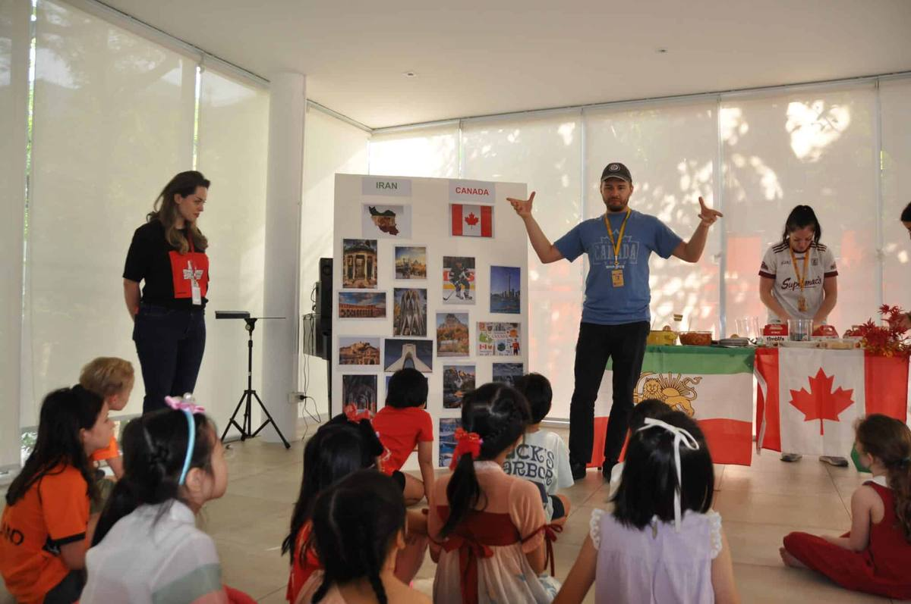
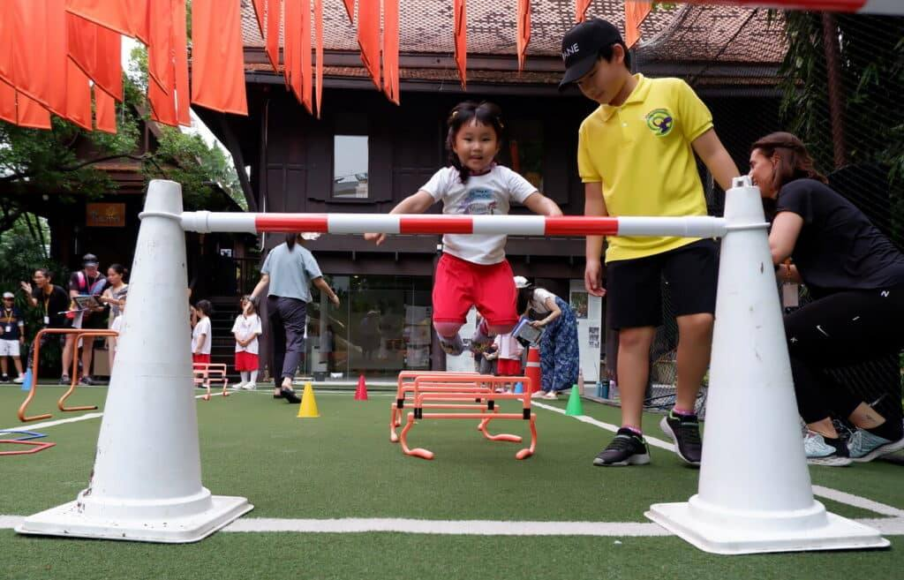

Where ELC families come together.
Workshops, social mornings and other events that bring the ELC community together: children and parents. La Comunità is how we turn a school into a place families belong.
Social mornings are the easiest place to start: coffee, no agenda, and other families who walk the same route as you. Dates for each one are on the calendar.
Parent workshops go one layer deeper, bringing a specialist to the questions parents actually carry. One workshop on positive parenting kept returning to a single idea: trust, in yourself as a parent and in your child. Read the story on our blog.

The Carnival of Cultures celebrated the many cultures inside this one school community, and parents ran the country pavilions themselves. Read the story on our blog.

And Fun Field Day brought the whole school onto the field for a day of games and team spirit, with older children helping younger ones through the course. Read the story on our blog.
Some families find their people through what their child loves. Armonia brings music, drama and dance performance together for Years 4 to 6, and each page tells its own story: drama, music, expressive languages, science, technology and sport.
This page is growing. If there is a community moment you would like to see here, tell us with the feedback button and we will build it in.